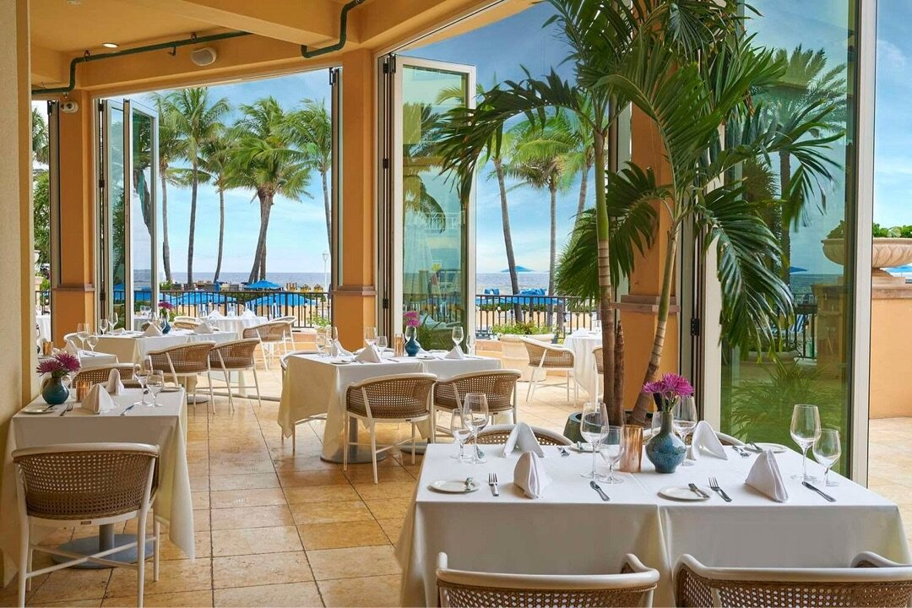

Hiring the wrong glazing subcontractor derails a commercial project in ways that are hard to recover from. Budget overruns, schedule slips, NOA documentation failures, and punch-list misery that eats into your contingency and your relationship with the owner. Palm Beach County has no shortage of glazing contractors, but commercial work - particularly Division 08 scopes that include impact-rated storefront, curtainwall, and entrance systems - requires a specific type of expertise. Here's what to verify before you send out that invitation to bid.

Check the License First (CGC Contractor License)
Florida licenses contractors through the Department of Business and Professional Regulation (DBPR), and the specific license class matters for Division 08 commercial work. A Certified General Contractor (CGC) license allows the holder to take prime contracts and subcontracts on any building type. A Certified Building Contractor (CBC) license covers most commercial work but with some scope limitations. A Certified Roofing Contractor (CRC) or specialty trade license does not cover glass and glazing at a commercial level.
For Division 08 subcontractors, you want to see a CGC license - not just a county-level Certificate of Competency (CC), which is issued locally and does not carry statewide validity. A CC may allow a contractor to pull permits in their home county, but if your project crosses county lines or the county's scope thresholds, that coverage disappears.
Verify any license at myfloridalicense.com before inviting a sub to bid. Enter the contractor's name or license number, confirm the license is active, confirm it is not under any disciplinary history, and confirm the qualifier of record is who you think it is. ACG holds CGC1531993 - that license is statewide, active, and publicly verifiable in under 60 seconds.
Confirm HVHZ & Miami-Dade NOA Experience
Palm Beach County is not in the High-Velocity Hurricane Zone (HVHZ). That designation applies only to Miami-Dade and Broward. Palm Beach is a wind-borne debris region, so impact-rated glazing is still required. The code path is Florida Product Approval under ASTM E1996/E1886. Miami-Dade NOA testing (TAS 201, 202, and 203) is the HVHZ path, and it is not the Palm Beach County requirement.
Products used on HVHZ projects must have a valid Miami-Dade Notice of Acceptance (NOA). The NOA is the product approval mechanism specific to the HVHZ - it is distinct from Florida Product Approvals (FL numbers), which apply statewide. When a glazing sub cannot produce the NOA numbers for the products they intend to install, that is a serious red flag. The NOA must match the product, the installation method, and the anchor substrate specified in your structural drawings.
Before bidding, ask every glazing sub to identify which products they plan to use and to confirm those products carry current, unexpired Miami-Dade NOAs. Ask them to walk you through how they handle the NOA documentation package for the building department submittal. A contractor who has done this dozens of times will answer that question without hesitation. One who hasn't will stumble. Our Division 08 services include full NOA documentation preparation as a standard deliverable.
Review Their Portfolio - Not Just Photos
Most glazing contractors have a website with project photos. That tells you almost nothing. What you need are verifiable project details: the GC of record, the project address, the approximate square footage of glazing, and the system types installed. A commercial glazier who has completed meaningful work in Palm Beach County should be able to produce that information without hesitation.
Specifically, look for commercial-only portfolios. A sub who mixes in residential impact window replacements alongside commercial storefront work is a different business than one who has focused exclusively on commercial construction. The coordination requirements, submittal processes, and quality standards between those two categories are substantially different. Residential-leaning subs often lack the submittals infrastructure that commercial GCs depend on.
Also look for project scale. If your scope is a 20,000 SF office building with curtainwall and an automatic entrance system, you need a sub who has done that specific combination before - not one whose largest project was a 3,000 SF medical office storefront. Review our commercial project portfolio to see the type and scale of work ACG performs across Florida.
Evaluate Bid Turnaround Time
GCs bidding commercial work in Palm Beach County are often working multiple pursuits simultaneously, with owner-driven due dates that don't flex. If you send plans to six Division 08 subs and three of them come back in 48 hours and three take two weeks, those last three aren't useful to your bidding process - regardless of whether their numbers are competitive.
A glazing subcontractor who cannot price a set of drawings within 48 hours is either too busy to service your project properly, or lacks the estimating infrastructure to handle commercial work at a professional level. In a market like Palm Beach County, where commercial construction activity has remained strong and qualified subs are genuinely busy, turnaround time is a real signal of capacity and organization. Ask upfront: "What's your typical bid turnaround on a set this size?" If the answer is vague, assume two weeks.
Ask About Manufacturer Relationships
The Florida commercial glazing market runs on a relatively short list of major manufacturers: ESWindows, PGT Commercial (now MITER Brands), and Eurowall are the primary players for storefront, curtainwall, and impact systems. The distinction that matters for you is whether your glazing sub installs and specifies these manufacturers' systems - or just purchases product without that installer/specifier process.
Installers who specify the systems they install can walk a GC through product training, installer qualification, and how manufacturer warranties layer with workmanship warranties. That distinction matters when an owner's attorney is reviewing the warranty package at closeout, and it matters when a product failure three years post-construction triggers a warranty claim.
Installer and specifier discipline also has direct bearing on NOA compliance. Miami-Dade NOAs frequently list specific installation requirements - anchor spacing, sealant specifications, substrate conditions - that must be followed precisely to maintain the listing. A crew that installs to those listed requirements keeps the NOA intact. One that does not may install a product in a way that voids the NOA without realizing it, creating a latent defect that won't surface until a claims adjuster comes around after the next major storm. Ask to see their installer and specifier documentation for the specific products they intend to use on your project.
Verify Insurance & Bondability
For commercial glazing scopes, minimum acceptable insurance limits in most GC subcontract agreements are $1M per occurrence / $2M aggregate on general liability, with the GC and owner named as additional insureds on a primary, non-contributory basis. Workers compensation must be in force with statutory limits - Florida's glazing trade has significant injury exposure from glass handling, lifts, and working at height, and an uninsured injury on your project creates direct exposure for you.
Bondability is a separate question that often doesn't come up until the owner's lender or a government-funded project requires it. If your project has bonding requirements, ask the sub whether they carry a surety line and what their current capacity is. Smaller subs - particularly residential-oriented operations that have expanded into commercial work - frequently lack the surety relationships needed to execute a performance and payment bond on a meaningful commercial scope.
Check for WBE/SBE Certifications
Many Palm Beach County projects - particularly those involving county or municipal funding, transit authority work, or institutional owners - carry set-aside or good-faith effort requirements for Women-Owned Business Enterprise (WBE) and Small Business Enterprise (SBE) participation. These requirements flow down from the prime contract to subcontractors, and a GC who can point to a certified WBE or SBE glazing sub checks a participation box that is otherwise difficult to fill in Division 08.
Certifications are issued through the Palm Beach County Office of Equal Business Opportunity, the Florida Office of Supplier Diversity (OSD), and the federal Small Business Administration (SBA) for 8(a) and HUBZone designations. Ask prospective subs whether they hold any current certifications and which issuing agencies. If a project's set-aside goals are important to your pursuit, prioritize subs who can actually document their certification status - not just claim it.
Red Flags to Watch For
Some indicators consistently surface before a problem glazing sub becomes a problem on your project. Watch for any of the following:
- No verifiable commercial references. If a sub cannot produce the name of a GC project manager who will take your call, that absence tells you something. Legitimate commercial subs have active relationships with multiple GCs and are not reluctant to share them.
- Residential-focused marketing and portfolio. A contractor whose website leads with home windows, hurricane protection for homeowners, and residential impact doors is in a fundamentally different business than commercial glazing, regardless of what their license technically permits.
- Inability to name the NOA numbers for their proposed products. If they can't recite those numbers or don't know where to find them quickly, they haven't done this enough in the HVHZ.
- Slow bid response or no response. If they ghost you during bidding, they'll ghost you during construction.
- No submittal infrastructure. A professional commercial glazing sub should be able to produce a submittals log, shop drawings, and a product data package as a matter of course. If they treat submittals as an afterthought, your project closeout will be painful.
- License verification failure. If myfloridalicense.com shows a lapsed license, a disciplinary action, or a qualifier who doesn't match the company name on the bid, walk away.
Making the Right Call for Your Palm Beach County Project
Commercial glazing in West Palm Beach and Palm Beach County is a specialized scope that carries real consequences when it goes wrong. The HVHZ requirements, the documentation chain from manufacturer to installer to building department, and the coordination demands of a busy commercial schedule all require a subcontractor who has done this work, repeatedly, at a professional level.
ACG has been performing commercial glazing in West Palm Beach for over five years, with Division 08 scopes delivered across Florida. Our West Palm Beach office handles Division 08 scopes throughout Palm Beach County, from the barrier island to the western communities, and our 48-hour budget pricing means you get a competitive, detailed number when you need it - not two weeks after your due date. For storefront scopes in this market, use the West Palm Beach commercial storefront installer page.
Send your plans to our team at acglass.com/contact.html or call (772) 486-7711. We'll have a scope back to you within 48 hours.